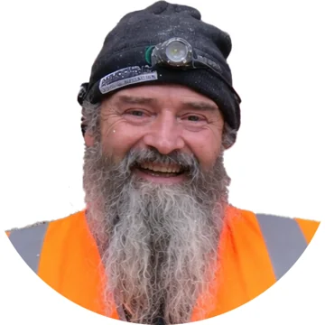

Damien Condon
Founder & Master Craftsman
Carrying forward six generations of plastering and masonry craft, Damien Condon is the founder of Calx Renders Ltd. and a conservation specialist with more than 35 years’ experience in the conservation of historic buildings.
- Professional Development Diploma in Historic Building Conservation and Repair, West Dean College
- Professional Development Diploma in the Conservation and Repair of Architectural Structures and Building Conservation, West Dean College
- C1 & C2 Conservation Masonry (SCQF, SQA)
- C1 & C2 Working with Historic Materials, The Scottish Lime Centre